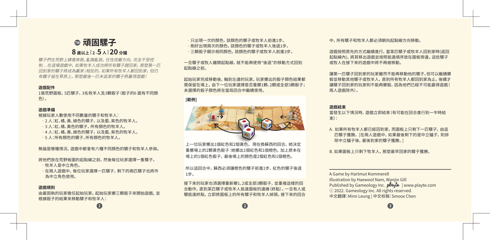

1简介
骡子们在荒野上肆意奔跑、乱踢乱跳，任性改变方向，完全不受控制…在这场游戏中，如果牧羊人成功将所有骡子赶回家，那么第一匹回到家的骡子将成为赢家；相反地，如果所有牧羊人都回到家，但仍有骡子留在草原上，那么最后一匹未返家的骡子将赢得游戏！
用字说明：繁体原书通篇作「騾子」，英文原名为 Mules，故本页统一采用「骡子」（此前版本曾译作「驴子」，现已统一改正）。原书仅在「两人游戏」的括号说明里误用过一次「中立驢子」，本页照其语义写作「中立骡子」。颜色名保留中文（红、橘、黄、绿、蓝、紫）。
2配件
游戏板为荒野赛道
颜色：红、橘、黄、绿、蓝（各 1 匹）
颜色：绿、蓝、紫（各 1 名，中立棋子）
每颗骰子的 6 面颜色各不相同（红、橘、黄、绿、蓝、紫），与场上 6 个棋子的颜色一一对应
3准备
根据玩家人数，使用不同数量的骡子和牧羊人。
| 人数 | 使用骡子（按颜色） | 使用牧羊人（按颜色） | 场上棋子 |
|---|---|---|---|
| 2 人 | 红、橘、黄、绿（4 匹） | 蓝、紫（2 名） | 合计 6 个 |
| 3 人 | 红、橘、黄（3 匹） | 绿、蓝、紫（3 名） | 合计 6 个 |
| 4 人 | 红、橘、黄、绿（4 匹） | 蓝、紫（2 名） | 合计 6 个 |
| 5 人 | 红、橘、黄、绿、蓝（5 匹） | 紫（1 名） | 合计 6 个 |
- 无论哪种情况，场上的骡子与牧羊人合计都是 6 个棋子，6 种颜色各一个、互不重复——正好对应 3 颗骰子 6 个面上的 6 种颜色。
- 5 人局：5 名玩家各选一匹骡子，没有中立骡子。
- 将所有棋子放在荒野图板的起点线之前，每位玩家选一匹骡子。
- 牧羊人是中立角色，不属于任何玩家。
- 2 人局特别说明：每位玩家各选一匹骡子，剩下的两匹骡子也作为中立角色使用。
上表据此按配件实物还原：骡子 5 匹＝红、橘、黄、绿、蓝，牧羊人 3 名＝绿、蓝、紫。绿色、蓝色各有「一匹骡子 + 一名牧羊人」两个棋子，但同一局内绝不会同时上场（见上表配色），所以任何骰面颜色永远只对应场上唯一一个棋子，不会出现歧义。
5 人局原书为笔误：「所有顏色的騾子，所有顏色的牧羊人」若照字面摆放为 5＋3＝8 个棋子，与「合计 6 色各一」以及官方「依玩家人数有 1–3 名牧羊人在场、且颜色各异」的说明相矛盾。按配件数量与总数守恒，5 人局应为全部 5 匹骡子 + 紫色牧羊人 1 名。
4游戏规则
由最固执的玩家担任起始玩家。起始玩家掷 3 颗骰子来开始游戏，并根据掷骰结果移动骡子和牧羊人：
骰子颜色的结算
该色的骡子或牧羊人前进 1 步
该色的骡子或牧羊人后退 1 步
该色的骡子或牧羊人前进 3 步
留骰规则
起始玩家完成移动后，轮到左边的玩家。玩家掷出的骰子颜色结果都保留在场上，由下一位玩家选择是否重掷 1 颗、2 颗或全部 3 颗骰子；未选择重掷的骰子颜色将在本回合中继续使用。
5示例
【示例】上一位玩家掷出 1 个红色和 2 个黄色。现在轮到 Susie 的回合，她决定重掷场上的 2 颗黄色骰子：她掷出 1 个红色和 1 个橙色，加上原本场上的 1 颗红色骰子，最后场上的颜色是 2 个红色和 1 个橙色。
所以这回合中，Susie 必须让橙色的骡子前进 1 步，红色的骡子后退 1 步。
场上结算示意：
红红橘 → 橘色 ×1 = 前进 1 步 红色 ×2 = 后退 1 步
6抵达终点（掉头）
接下来的玩家也须选择重新掷 1、2 或全部 3 颗骰子，并重复这样的回合动作，直到某匹骡子或牧羊人抵达图板的边缘（终点）。
一旦有人或骡抵达终点，立即将图板上的所有骡子和牧羊人掉头。接下来的回合中，所有骡子和牧羊人都必须朝向起点线方向移动。
7回家与出场
游戏按原先的方式继续进行；当某匹骡子或牧羊人回到家（返回起点线内）时，将其移出游戏，并按抵达顺序放在图板旁边。这些已回家的骡子或牧羊人在接下来的游戏中将不再被移动。
8第一匹回家者的特权
让第一匹骡子回到家的玩家虽然不能再移动自己的骡子，但可以继续掷骰并移动其他骡子或牧羊人，直到所有牧羊人都回到家为止。
后续才让骡子回到家的玩家则不能再掷骰，因为他们已经不可能赢得游戏（两人游戏除外）。
9游戏结束
当发生以下情况时，游戏立即结束（有可能在回合进行到一半时结束）：
- A. 如果所有牧羊人都已经回到家，而图板上只剩下一匹骡子，由这匹骡子获胜。
〔在两人游戏中，如果最后剩下的是中立骡子，则排除中立骡子后，最后到家的骡子获胜。〕 - B. 如果图板上只剩下牧羊人，那么最早回家的骡子获胜。

10制作信息
游戏设计（设计）：Hartmut Kommerell
插画（插画）：Haewool Nam、Wanjin Gill
出版（出版）：Gameology Inc. | playte | www.playte.com
繁体中文翻译：Mimi Leung
繁体中文校稿：Smoox Chen
ⓒ 2022. Gameology Inc. All rights reserved.
本规则书的简体化以 Gameology 2022 年繁体版为权威源（原书正文用字为「騾子」，本页据此统一作「骡子」），译本已取得繁体中文翻译（Mimi Leung 译 / Smoox Chen 校稿）的双语对照素材。简体版中文游戏名采用「顽固的骡子」；专有名词（颜色名、人名、公司名、文件名）保留英文。